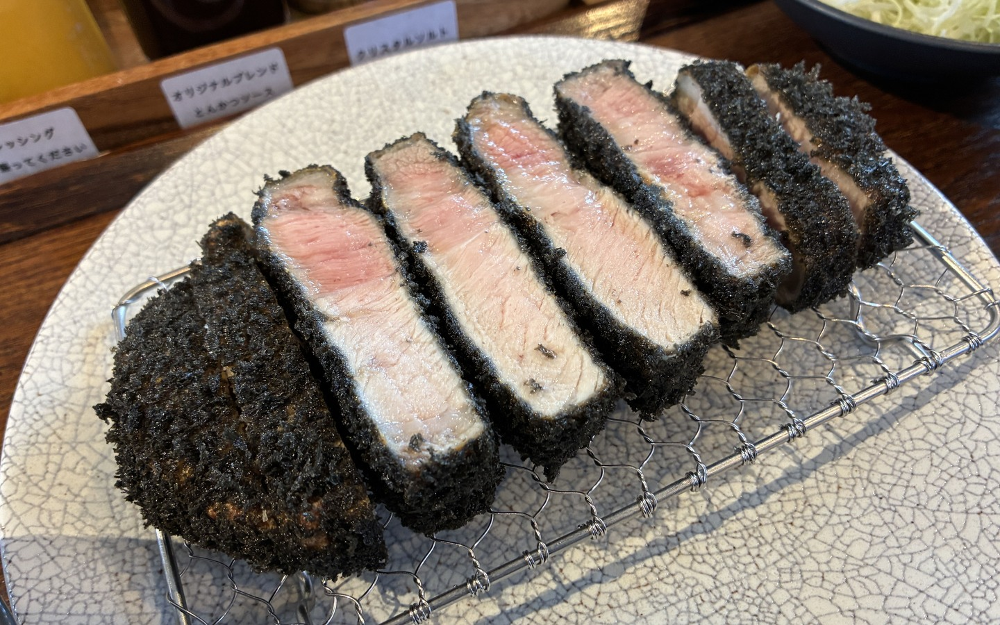
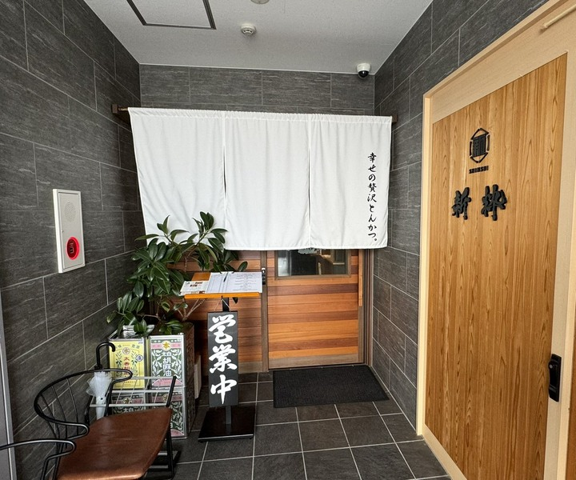
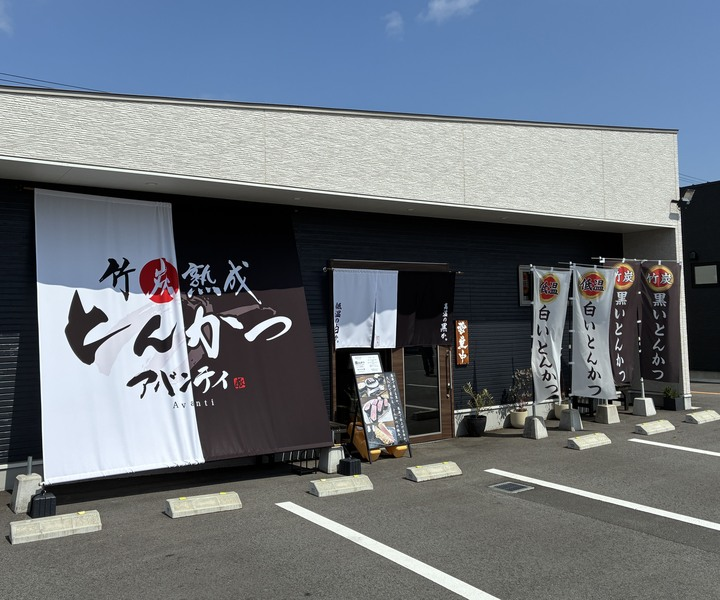
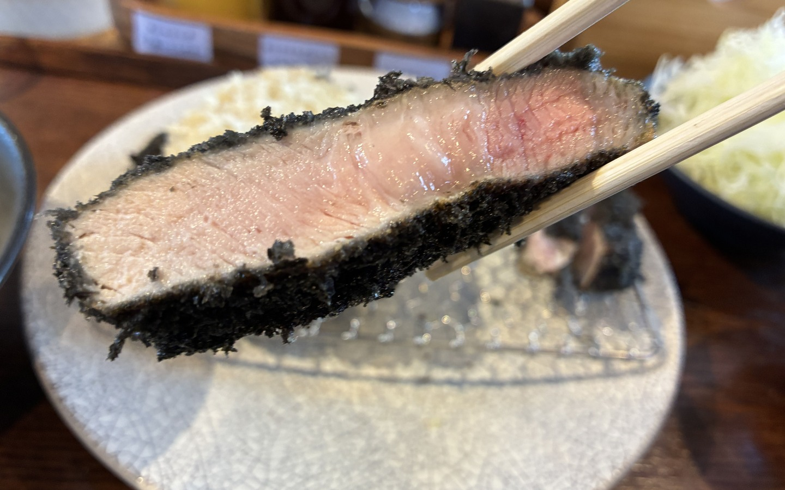

ひと口目から、贅沢に。松阪牛のカツレツも。
高温の黒か、低温の白か。
【黒】高温でカリっと仕上げる黒い衣は、竹炭を練りこんだ特注の生パン粉。
これぞとんかつという食感に仕上げました。
【白】低温で仕上げる白い衣は、糖度を抑えた特注の生パン粉。
驚くほど柔らかくとろける食感に仕上げました。
使用するお肉はどちらも同じ熟成豚。
火入れと衣でまったく違う一皿に。

高温で揚げる黒か、低温で仕上げる白か。火入れで変わる、とんかつの極み。


二つのアバンティ
白も、黒も。一膳で食べ比べ。白と黒の食べ比べ膳 1,890円
うまいとんかつの食べ方
贅沢とんかつ
- 最初は何もつけずそのままで
- ピンクソルトだけで
- ソルトとワサビ、からしを組み合わせて
- 自家製だし醤油とワサビで
- とんかつソースで
竹炭熟成とんかつ
一、まずはそのまま食べるべし
二、塩だけで食べるべし
三、塩やわさび、からしで食べるべし
四、とんかつソースで食べるべし
黒か白か、食感の違いを味わえ

テレビでも紹介されました
三重テレビ（2024年3月2日）。贅沢とんかつ アバンティ（京町）の紹介。
動きも全力。本業は、とんかつです。TikTok を見る →定休日と臨時休業は Instagram で
贅沢とんかつ @tonkatsu_avanti 竹炭熟成とんかつ @takesumi_avanti贅沢とんかつ アバンティ
三重県松阪市京町515-8SUNRISEビル 2F 0598-67-5615
- 営業時間
- 月〜金 11:30〜14:30（L.O.14:00）・18:00〜21:00（L.O.20:30）、土 11:30〜14:30・17:30〜21:00、日祝 11:00〜14:30・17:30〜21:00
- 駐車場
- ビル裏の専用駐車場3台（No.4〜6）
- お支払い
- 現金のみ
竹炭熟成とんかつ アバンティ
三重県松阪市中道町530-4フードパークこむぎむら7号地 0598-30-4330
- 営業時間
- ランチ 11:00〜14:00 L.O.・ディナー 18:00〜20:30 L.O.（営業日は Instagram のハイライト）
- 駐車場
- パーク内の共用駐車場（約100台）
- お支払い
- 現金